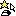
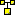
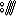

0mg
Tools(HTML)
Color Mixer

DOM Event Monitor
JavaScript Evaluator

JSObjTree v3
,
v2
Kana Roma Transformer
Morse Translator
Unicode Table

URI Validator
Opera
UserJS
opera:/button
Referrer logging ON/OFF
Enable Cookies ON/OFF
Enable javascript ON/OFF
GIF animation ON/OFF
plugins ON/OFF
Work offline ON/OFF
Lock page ON/OFF
Author
handle
0mg
Ray Milligram
activity
0mg on drawr
0mg on SoundCloud
0mg on Twitter
0mg on Userscripts.org